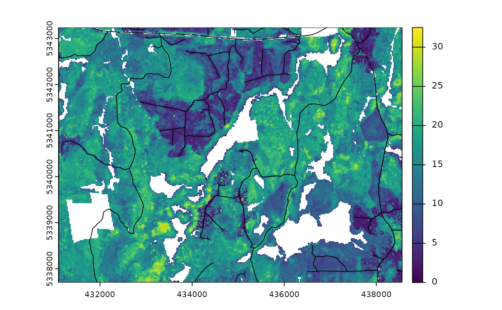

Algorithm structure
sgsR is scripted using the terra package to
handle raster processing, and sf package for vector
manipulation.
Four primary function verbs exist:
strat_*
Stratification algorithms within sgsR. These algorithms
use auxiliary raster data (e.g. ALS metric populations) as inputs and
provide stratified areas of interest as outputs. Algorithms are either
supervised (e.g. strat_breaks()), where the user provides
quantitative values that drive stratifications, or unsupervised
(e.g. strat_quantiles()), where the user specifies the
desired number of output strata (nStrata) and
stratification is handled by the algorithm.
sample_*
Sampling algorithms in sgsR. Depending on the sampling
algorithm, users are able to provide either auxiliary metrics or
stratifications derived from strat_* functions as inputs. A
number of customizable parameters can be set including the sample size
(nSamp), a minimum distance threshold
(mindist) between allocated sample units, and the ability
for the user to define an access network (access) and
assign minimum (buff_inner) and maximum
(buff_outer) buffer distances to constrain sampling
extents.
Parameters
sgsR uses common words that define algorithm
parameters:
| Parameter | Description |
|---|---|
mraster |
Metric raster(s) |
sraster |
Stratified raster |
access |
Linear vectors representing access routes |
existing |
Existing sample units |
plot |
Visually displays raster and samples |
mraster
mraster are input raster(s). All raster data used by
sgsR must be must be a terra SpatRaster
class.
sraster
sraster are derived from strat_* algorithms
(e.g. see strat_quantiles() below). The function below used
the distribution of mraster$zq90 and stratified data into 4
equally sized strata.
#--- apply kmeans algorithm to metrics raster ---#
sraster <- strat_quantiles(
mraster = mraster$zq90, # use mraster as input for sampling
nStrata = 4, # algorithm will produce 4 strata
plot = TRUE
) # algorithm will plot outputThe sraster output can then become an input parameter
(sraster) for the sample_strat()
algorithm.
#--- apply stratified sampling ---#
existing <- sample_strat(
sraster = sraster, # use mraster as input for sampling
nSamp = 200, # request 200 samples be taken
mindist = 100, # define that samples must be 100 m apart
plot = TRUE
) # algorithm will plot output
access
One key feature of using some sample_* functions is its
ability to define access corridors. Users can supply a road
access network (must be sf line objects) and
define buffers around access where samples should be
excluded and included.
Relevant and applicable parameters when access is
defined are:
buff_inner- Can be left asNULL(default). Inner buffer parameter that defines the distance fromaccesswhere samples cannot be taken (i.e. if you don’t want samples within 50 m of youraccesslayer setbuff_inner = 50).buff_outer- Outer buffer parameter that defines the maximum distance that the samples can be located fromaccess(i.e. if you don’t want samples more than 200 meters from youraccesslayer setbuff_inner = 200).
a <- system.file("extdata", "access.shp", package = "sgsR")
#--- load the access vector using the sf package ---#
access <- sf::st_read(a)
#> Reading layer `access' from data source
#> `/home/runner/work/_temp/Library/sgsR/extdata/access.shp'
#> using driver `ESRI Shapefile'
#> Simple feature collection with 167 features and 2 fields
#> Geometry type: MULTILINESTRING
#> Dimension: XY
#> Bounding box: xmin: 431100 ymin: 5337700 xmax: 438560 ymax: 5343240
#> Projected CRS: UTM_Zone_17_Northern_Hemisphere
From the plot output we see the first band (zq90) of the
mraster with the access vector overlaid.
%>%
The sgsR package leverages the %>% operator from the
magrittr package.
#--- non piped ---#
sraster <- strat_quantiles(
mraster = mraster$zq90, # use mraster as input for sampling
nStrata = 4
) # algorithm will produce 4 strata
existing <- sample_strat(
sraster = sraster, # use mraster as input for sampling
nSamp = 200, # request 200 samples be taken
mindist = 100
) # define that samples must be 100 m apart
extract_metrics(
mraster = mraster,
existing = existing
)
#--- piped ---#
strat_quantiles(mraster = mraster$zq90, nStrata = 4) %>%
sample_strat(., nSamp = 200, mindist = 100) %>%
extract_metrics(mraster = mraster, existing = .)